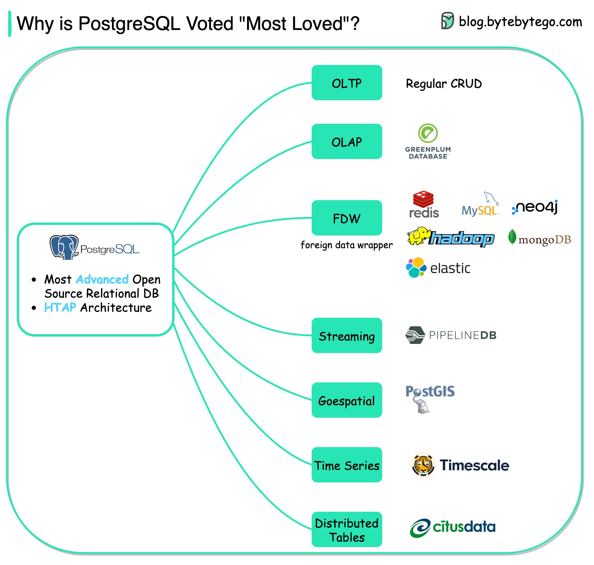

The diagram shows the many use cases of PostgreSQL - one database that includes almost all the use cases developers need.
OLTP (Online Transaction Processing)
We can use PostgreSQL for CRUD (Create-Read-Update-Delete) operations.
OLAP (Online Analytical Processing)
We can use PostgreSQL for analytical processing. PostgreSQL is based on HTAP(Hybrid transactional/analytical processing) architecture, so it can handle both OLTP and OLAP well.
FDW (Foreign Data Wrapper)
A FDW is an extension available in PostgreSQL that allows us to access a table or schema in one database from another.
Streaming
PipelineDB is a PostgreSQL extension for high-performance time-series aggregation, designed to power real-time reporting and analytics applications.
Geospatial
PostGIS is a spatial database extender for PostgreSQL object-relational database. It adds support for geographic objects, allowing location queries to be run in SQL.
Time Series
Timescale extends PostgreSQL for time series and analytics. For example, developers can combine relentless streams of financial and tick data with other business data to build new apps and uncover unique insights.
Distributed Tables
CitusData scales Postgres by distributing data & queries.